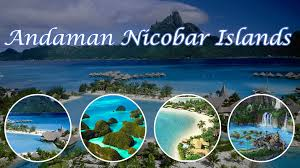
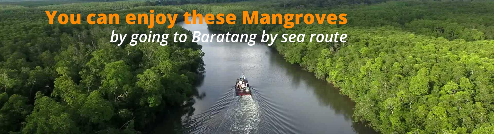
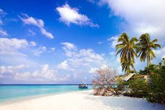
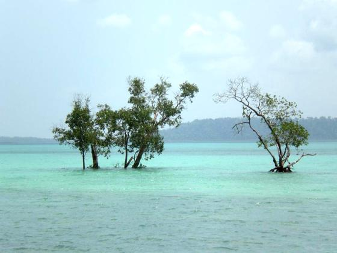

Andaman and Nicobar Islands
Andaman and Nicobar Islands have emerged from being a prisoner’s camp to a disease stricken land, to now being the most coveted and
beautiful islands. 572 small and loosely flowing islands filled with the unpolluted sun and untamed wild life, make this a breathtaking
place. Fishes die from old age as commercial fishing is banned. The Dermochelys Coriacea endangered turtles, weighing 500 kilograms,
flock in thousands here every year where they nest. The Robber Crabs are the only crabs who climb up coconut trees to stealthily steal the
soft coconut kernels without breaking apart the coconut.

History
The earliest archaeological evidence documents some 2,200 years. However, genetic and cultural studies suggest that the indigenous Andamanese people may have been isolated from other populations during the Middle Paleolithic, which ended 30,000 years ago.[9] Since that time, the Andamanese have diversified into linguistically and culturally distinct, territorial groups.
The history of organised European colonisation on the islands began when settlers from the Danish East India Company arrived in the Nicobar Islands on 12 December 1755. On 1 January 1756, the Nicobar Islands were made a Danish colony, first named New Denmark,
n 1789 the British set up a naval base and penal colony on Chatham Island next to Great Andaman, where now lies the town of Port Blair. Two years later the colony was moved to Port Cornwallis on Great Andaman, but it was abandoned in 1796 due to disease.

Geography
The capital of the union territory, Port Blair, is located 1,255 km (780 mi) from Kolkata, 1,200 km (750 mi) from Visakhapatnam and 1,190 km (740 mi) from Chennai.[14]:33 The northernmost point of the Andaman and Nicobars group is 901 km (560 mi) away from the mouth of the Hooghly River and 190 km (120 mi) from Myanmar. Indira Point at 6°45’10″N and 93°49’36″E at the southern tip of the southernmost island, Great Nicobar, is the southernmost point of India and lies only 150 km (93 mi) from Sumatra in Indonesia. The only volcano in India, Barren Island, is located in Andaman and Nicobar. It is an active volcano and erupted in 2017.

Tourism
Andaman and Nicobar Islands are developing into a major tourism hub with exotic-looking beaches and pristine islands having equally exotic names, wonderful opportunities for adventure sports like snorkelling and sea-walking.[28] Plans to develop various islands under NITI (National Institute of Transforming India) Aayog is also in progress. Luxury resorts with participation from the Government are set up to plan in Avis Island, Smith Island and Long Island
In Port Blair, the main places to visit are the Cellular Jail, Mahatma Gandhi Marine National Park, Andaman Water sports complex, Chatham Saw Mill, Mini Zoo, Corbyn's cove, Chidiya Tapu, Wandoor Beach, Forest Museum, Anthropological Museum, Fisheries Museum, Naval Museum (Samudrika), Ross Island and North Bay Island. Viper Island which was earlier visited is now kept closed by the administration. Other places include Havelock island famous for Radhanagar Beach, Neil Island for Scuba diving/snorkeling/sea walking, Cinque island, Saddle peak, Mt Harriet and Mud Volcano. Diglipur, located at North Andaman is also getting popular in 2018 and many tourists have started visiting North Andaman as well. The southern group (Nicobar islands) is mostly inaccessible to tourists.
Indian tourists do not require a permit to visit the Andaman Islands, but if they wish to visit any tribal areas they need a special permit from the Deputy Commissioner in Port Blair. Permits are required for foreign 0nationals. For foreign nationals arriving by air, these are granted upon arrival at Port Blair.

Administration
In 1874, the British had placed the Andaman and Nicobar Islands in one administrative territory headed by a Chief Commissioner as its judicial administrator. On 1 August 1974, the Nicobar islands were hived off into another revenue district with district headquarters at Car Nicobar under a Deputy Commissioner. In 1982, the post of Lieutenant Governor was created who replaced the Chief Commissioner as the head of administration. Subsequently, a "Pradesh council" with Councillors as representatives of the people was constituted to advise the Lieutenant Governor.[14] The Islands sends one representative to Lok Sabha from its Andaman and Nicobar Islands (Lok Sabha constituency).